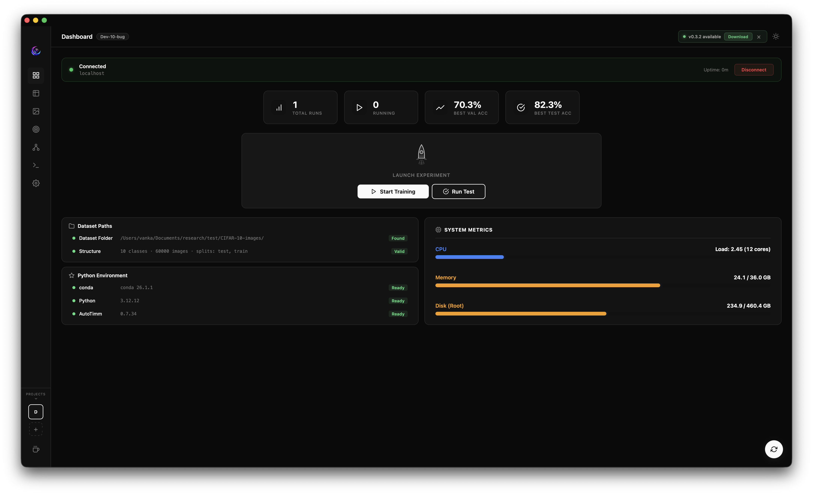

Start with your data
Browse images by class and split. Connect CSV columns to image paths and labels, and check your dataset before training.
Explore this workflow ↗+ THE OPEN-SOURCE VISION WORKSPACE
Train, compare, and understand computer vision models in one desktop app. Built on AutoTimm. Powered by hardware you control.
Free & open source · Apache 2.0 · macOS & Linux

ONE PLACE TO KEEP MOVING
NightFlow brings the training loop into focus. Prepare your data, follow every run, and investigate what your model learned.
Browse images by class and split. Connect CSV columns to image paths and labels, and check your dataset before training.
Explore this workflow ↗AutoTimm handles model training and tuning. Adjust learning rate, batch size, epochs, augmentation, and more when you need control.
Explore this workflow ↗Return to run parameters, loss curves, evaluation metrics, and notes. Compare outcomes without hunting through terminal output.
Explore this workflow ↗Explore confusion matrices, per-class metrics, and attribution methods such as GradCAM to investigate model behavior.
Explore this workflow ↗Open exported models in the integrated Netron viewer. Follow the model structure alongside your training results.
Explore this workflow ↗Export supported models to TorchScript or ONNX. TensorRT is available for compatible NVIDIA deployments.
Explore this workflow ↗FIVE TASKS. ONE WORKSPACE.
Choose the task your problem needs. NightFlow connects the project to the corresponding AutoTimm model and data module.
Assign one category to each image.
Recognize several labels in the same image.
Locate objects and predict their classes with FCOS or YOLOX.
Assign a class to each pixel in an image.
Separate and label individual object instances.
USE THE COMPUTE YOU HAVE
Run locally with NVIDIA CUDA, Apple Metal, or a CPU. Choose an accelerator explicitly, or let the training environment select one.
Desktop releases target macOS and Linux. Accelerator support depends on your hardware and installed PyTorch environment. Windows support is currently paused.
OPEN SOURCE, ALL THE WAY DOWN
NightFlow is free to use, inspect, and improve under Apache 2.0. There’s no required hosted training account. Your compute and deployment choices stay yours.
GOOD QUESTIONS
A few practical details about the project.
Yes. NightFlow is open-source software licensed under Apache 2.0. You supply the computer or server, so any hardware, electricity, or remote infrastructure costs remain your own.
No. CPU training is available. GPUs can make suitable workloads faster, and a small dataset with a lightweight model is a sensible first experiment.
Local training uses data on your machine; it does not require uploading a dataset to a hosted training service. Dependency installation, pretrained weights, update checks, and optional model-sharing features can use the network.
The integrated terminal can connect through SSH. Managed training currently runs local processes, so remote training must be launched from the connected terminal. See the remote workflow notes.
Install a build for your platform, prepare a small labeled dataset, and follow the first-project guide. The documentation covers CSV mappings, training controls, evaluation, and exports.
MAKE YOUR NEXT EXPERIMENT COUNT
Start with a small dataset. Keep what you learn. Iterate.